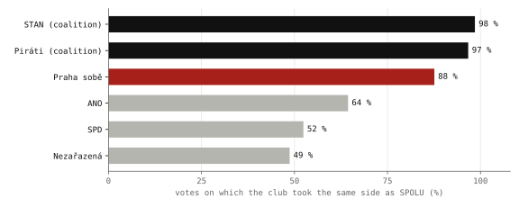
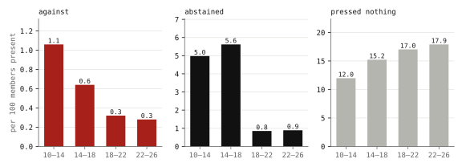
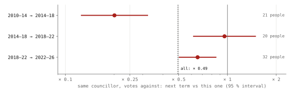
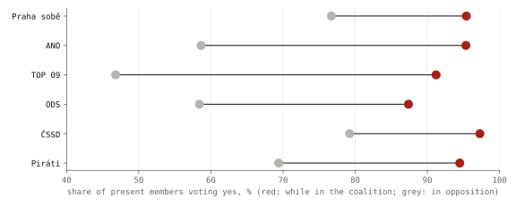
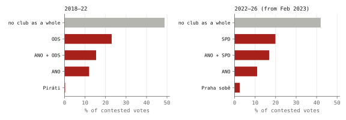
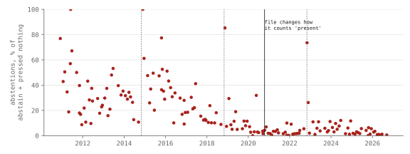

Research · Prague, measured, Part 1 of 5 · City Assembly roll calls, 2010–2026
Do Prague's councillors vote against less, term after term?
On final votes on adopted resolutions since 2010, the same councillors voted against less in each later term, × 0.49 pooled (supported), and more than half of that fall comes from 2010–14 to 2014–18.
- Praha sobě on the same side as SPOLU
- 88 % 2 468 votes, 2022–26 · administrative count
- "against" per 100 present, passed votes
- 0.28 1.06 in 2010–14 · administrative count
- a councillor's votes against, next term vs this one
- × 0.49 95 % CI 0.38–0.65, t interval over people, added after the results · 59 councillors · supported
- ANO voting yes, in the coalition / in opposition
- 95 / 59 % administrative count · descriptive
Overwhelmed? Here's the short version
- More than half of the within-councillor fall on the log scale, 54 %, comes from 2010–14 to 2014–18 (× 0.20); without that transition the pooled ratio is still × 0.72, and the 2018–22 to 2022–26 transition alone gives × 0.65 (95 % CI 0.50–0.85). Among the 26 whose share of the term in opposition changed by less than half it is × 0.86, not significant.
- Non-support is now recorded mostly as pressing nothing, so the record says less about who opposed what than it did in 2010.
- The other two registered tests were not supported. One of them (H3) gave the left–right cut more freedom than the coalition line by design, which tilts it towards left–right; a symmetric version was not run.
- Registered analysis plan: design committed at 3830f59 on 28 September 2026, before the results commit a79f48f; commit times are self-reported, and the branch was pushed after the analysis. The author had worked with these data since May 2024.
- The files hold only final votes on adopted resolutions, 55–67 % of the roll calls; procedural votes and amendments, where studies of other legislatures find conflict shows most, are missing, so the results describe final votes only.
Photo: Diliff · CC BY-SA 3.0, toned

Prague's City Assembly publishes its roll calls as open data, one row per vote and one column per councillor1, and across its four terms since 2010 votes against have become rare on the resolutions it adopts. That leaves three questions: whether the same councillors changed how they vote or were replaced; whether the chamber divides by government and opposition or by left and right; and what the opposition votes against. Legislative scholars have tools for each: scaling votes into positions23, comparing a government–opposition divide with a left–right one4, and separating members who change their behaviour from members who are replaced5. This study applies them to a municipal assembly, where coalitions form and fall within a term and a chamber of 65 keeps many of the same people across terms, under a registered analysis plan6.
Data
Each cell of the files holds what a councillor did on a vote, and there are five possible entries. Hlas pro is a vote for, hlas proti against, zdržel se an abstention. Nehlasoval means the councillor was in the room and pressed nothing, and chyběl means absent. A resolution needs 33 votes for, a majority of all 65 seats, so the three ways of not voting for have the same legal effect, since none of them counts towards the 33, and they differ only in what goes on the record.
The current term, from its first session in November 2022 to September 2026, holds 2 468 votes over 40 sittings (38 numbered sessions; the summary in votes2022.json counts 42 meeting dates, because a sitting that runs past midnight or over several days spans more than one date). The four files since 2010 hold 10 570 roll calls, and the four-term analysis uses 10 565 of them, after five rows marked as technical errors or with totals that contradict the named votes are left out. The files hold votes on substantive items only, not on the agenda or procedure, and in practice one final vote per resolution7. Rejected proposals and amendments are almost absent: in the current term, two votes in the file failed. Comparing the numbered votes of each sitting with the rows published shows that the files hold between 55 and 67 % of the roll calls taken. The missing ones are procedural votes, agenda changes and amendments; in the US House and the European Parliament, such procedural and unrecorded votes are where agenda control and conflict between majority and minority show most89. Everything here is therefore about final votes on adopted resolutions, which leave out much of what the assembly argued about. Because the files are the whole published record, not a sample of it, the shares and rates computed from them directly are administrative counts with no sampling error; intervals are given for the registered estimates.
Clubs are the lists councillors were elected from, taken from the Statistical Office's candidate registers10. For the current term they were checked against the clubs on the city's own list of councillors11. Two councillors changed club during the term: Hana Kordová Marvanová, discussed below, and Jana Komrsková, who left the Pirates for Jsme Team in June 2026 and is kept in the Pirates' club, as elected, for the whole term6. The councillor-to-list crosswalk for all four terms is published with the design6. The dates on which each list entered and left the coalition come from coalition agreements and news reports12, and resolution titles for 2022–2026 from the city's resolution register1.
How this was done
The four-term study follows a registered analysis plan: design committed at 3830f59 on 28 September 2026, before the results commit a79f48f; commit times are self-reported, and the branch was pushed after the analysis6. The author had worked with these data since May 2024. The plan fixes the hypotheses, one test for each and the decision rules, and the three confirmatory tests share a family-wise error rate of 5 %, the chance that any of them is wrongly declared supported, through Holm's procedure13, which tests the smallest p-value against the strictest threshold and relaxes the threshold one step for each test that passes.
The first version of this article, published earlier on 28 September, had already reported that on passed votes the rate of voting against fell in every term, from 1.06 per 100 councillors present in 2010–14 to 0.28, along with the current term's agreement between clubs and the abrupt fall in abstentions after 2018. The direction of H1 was therefore partly known in aggregate. Nothing within councillors, no scaling and nothing by subject or coalition status had been published; §0 of the design lists what had been published or inspected before the plan.
H1's estimand is the average change in the log odds of a councillor's vote being against (with a small correction so that a count of zero can be used), between consecutive terms, each person weighted equally, and adjusted for the change in how much of the term their club spent in opposition. It mixes change over time with career stage, which person-level data cannot separate. Inference is over people, 59 of them in 73 pairs of terms, by a sign-flip test: how often an average change this negative appears when each person's change is given a random sign. The plan registered that p-value only; the 95 % interval given for the pooled ratio, 0.38–0.65, is a t interval over the 59 people's mean changes, added after the results. The design counted 74 eligible pairs; one 2010 councillor, Petr Novotný, could not be matched to a list and is left out. Changes after registration are listed below.
The tests
| Hypothesis | Test | Result |
|---|---|---|
| H1 · the same councillors vote against less, term after term | within-person change < 0, pooled over three transitions | supported × 0.49 per term (95 % CI 0.38–0.65), p < 0.001; more than half from 2010–14 to 2014–18 |
| H3 · votes split along coalition and opposition better than along left and right | classification errors | not supported left–right cut fits better, but the test let it pick its cut on each vote |
| H4 · the opposition opposes planning and property more than grants | difference in non-support | not supported −0.4 pp, one-sided p = 0.53 |
The table keeps the registered numbering. H2, on when abstentions fell, was registered as description because the fall had already been published (§0 of the design), so it is outside the family of tests and the table skips from H1 to H3. It is reported under "Abstentions before and after 2018".
The coalition and the opposition clubs, 2022–2026
Since 16 February 2023 Prague has been governed by SPOLU (ODS, TOP 09, KDU-ČSL), the Pirates and STAN, 36 of the 65 seats14. For each vote and each club, the club's position here is yes if more than half of its members present voted for, and anything else if not. Measured that way, STAN took the same side as SPOLU, the mayor's club, on 98 % of the votes, and the Pirates on 97 %.
Praha sobě, in opposition, sided with SPOLU on 88 % of votes, far more than ANO (64 %) or SPD (52 %).

Praha sobě, with 11 seats, has been in opposition since the coalition formed, yet it took the same side as SPOLU on 88 % of the votes. ANO, the largest opposition club, did so on 64 %, and SPD on 52 %. The one councillor outside every club is Kordová Marvanová, elected for SPOLU and expelled from its club in February 2023 after she did not vote for Bohuslav Svoboda as mayor15. She is counted on her own here, so her votes never move SPOLU's position. Quarter by quarter, Praha sobě stays close to the coalition apart from dips in the third quarter of 2024 and the first of 2026; absences do not enter a club's side, and in neither did the club vote against.
Votes against, abstentions and pressing nothing, 2010–2026
Of the 143 360 entries recorded this term while councillors were present, 403 are "against". There are 1 269 abstentions and 25 734 cases of pressing nothing. Every club, in government or in opposition, records non-support almost entirely by pressing nothing: for ANO, 98 % of its members' present non-yes votes are nehlasoval, for SPOLU 98 %, and for the Pirates 84 %.
The same files for the three earlier terms show that on the resolutions that passed, the rate of "against" has fallen in every term since 2010, from 1.06 per 100 councillors present to 0.28. In 2010–2014, 11.5 % of passed votes drew at least one vote against, and in this term 4.5 % did. Over the same years, pressing nothing rose from 12 to 18 per 100 present.
Votes against fell in every term since 2010, while pressing nothing rose from 12 to 18 per 100 present.

The numbers fit a politics that has become more consensual, with items agreed before they reach the floor, and equally one in which disagreement has moved off the record. Pressing nothing is the one way of not supporting a resolution that nobody has to explain, whereas a vote against is a position. The roll calls cannot choose between the two readings, although under either of them a reader of the record now learns less about who opposed what than a reader in 2010 did.
The same councillors across consecutive terms
Fifty-nine people sat in two consecutive terms and were seated for at least 300 votes in each, 73 such pairs in all. The test compares each councillor's rate of voting against with their own rate one term earlier. It uses only votes against, because they need a button press: a change in how the system records a member who presses nothing cannot move that count, though it can move the number present it is divided by. Opposition councillors vote against more, so each change is adjusted for the change in time spent in opposition. The pooled estimate puts the next term's rate at 0.49 times the earlier one (95 % CI 0.38–0.65, the interval added after the results; p < 0.001, 59 people; strictly a ratio of odds, which at rates near 1 % is practically a ratio of rates). More than half of the fall on the log scale comes from the first of three transitions (fig. 3).
The same councillors voted against less in their next term, × 0.49 pooled: × 0.20 from 2010–14 to 2014–18, × 0.96 to 2018–22 and × 0.65 to 2022–26.

Between 2010–14 and 2014–18 the same 21 people voted against at 0.20 times their earlier rate (95 % CI 0.13–0.32), and about half of the assembly's fall in that transition came from the councillors who stayed, the rest from who left and who arrived. Between 2014–18 and 2018–22 the 20 who stayed voted at 0.96 times their earlier rate (95 % CI 0.62–1.49), and nearly all of the assembly's fall, 0.35 per 100 present, came from who left and arrived. Between 2018–22 and 2022–26 the 32 people who stayed voted at 0.65 times their earlier rate (95 % CI 0.50–0.85). Without the first transition the pooled ratio is still 0.72 (p = 0.004, 42 people), so 54 % of the pooled fall on the log scale (from a log ratio of −0.70 to −0.33) comes from 2010–14 to 2014–18; weighting each transition by its people, the first carries about 70 % of the summed fall. Among the 26 people whose share of the term in opposition changed by less than half it is 0.86 (p = 0.14); the plan described this check as councillors whose status was unchanged, and the half-term threshold in the code is a deviation, recorded in the change log. The registered result therefore holds as a pooled average and does not describe a steady halving in each term. Each new cohort has also arrived voting against less than the one before it: 0.67 per 100 present among 2014's newcomers, 0.30 among 2018's and 0.26 among 2022's, though who gets elected changes too, so the cohorts are not like for like.
The registered secondary outcome, the share of a councillor's present non-yes votes recorded as against or abstaining instead of pressing nothing, fell for the same people in every transition: × 0.27, × 0.29 and × 0.48 (pooled × 0.35, p < 0.001), so unlike votes against it does not rest on the first transition.
Yes votes in the coalition and in opposition
Setting each list's share of yes votes side by side for the periods it governed and the periods it did not, using the coalition dates from agreements and news reports12, shows how large the adjustment for coalition status is.
Every list said yes more often while it governed than in opposition (descriptive).

TOP 09 voted yes 91 % of the time while it governed in 2011–14, and 43 % in opposition in 2016–18. ANO voted yes 95 % in the coalition of 2014–18, and 58–60 % in opposition since. Praha sobě, a local movement, voted yes 95 % in the coalition of 2018–22 and 77 % in opposition since 2023, which is still the most of any opposition club and matches how close it sat to SPOLU in fig. 1. New coalitions also bring new agendas, so the comparison is descriptive and cannot separate governing from what each coalition put to the vote.
Coalition and opposition, or left and right
H3, following Hix and Noury4, tested whether on the contested votes, those with at least 2.5 % of the members present on the losing side, a single dividing line between coalition and opposition sorts the councillors better than a cut along the left–right order of their national parties. For left and right the design used the Chapel Hill expert survey16: economic left–right for 2018–22, and general left–right for 2022–26, where the economic scale lines the coalition up next to itself (Appendix B of the design).
The best left–right cut made 10 fewer errors per 100 councillors than the coalition–opposition line in 2018–22 (95 % CI 8–12, moving-block bootstrap over sittings in blocks of three) and 6 fewer in 2022–26 (95 % CI 3–8), and the gap is made up of which clubs withhold a yes (fig. 5).
When a club as a whole withholds a yes, it is usually one opposition club on its own.

Fig. 5, a breakdown added after the results, shows that the coalition clubs almost never withhold a yes as a club, and when a club does, it is usually one opposition club on its own. In 2018–22, ODS did so alone on 23 % of the contested votes, ANO alone on 12 %, and the two together on 15 %. In 2022–26, SPD did so alone on 20 %, ANO alone on 11 %, and the two together on 17 %. A left–right cut can separate ODS, or SPD, from everyone else, because they sit at one end of the scale. A single line between coalition and opposition cannot, because it must put ANO on the same side as them. The registered comparison gave left–right that flexibility, any cut against two fixed sides. The asymmetry was in the design committed before this analysis was run; a symmetric version would be a new, unregistered test and was not run, so the H3 result is tilted towards left–right by construction.
A one-dimensional scaling of the votes3, registered as description, places each councillor on one line from how they voted; scores are standardised across councillors (mean 0, SD 1), with the mayor's side positive, and are given here as club averages. In both terms it places the coalition clubs at one end of the line and the opposition clubs at the other. In 2018–22 the Pirates score +0.96, Praha sobě +0.82 and the TOP 09 and STAN list +0.20, against ANO at −1.06 and ODS at −1.10. In 2022–26 the Pirates score +0.83, STAN +0.70 and SPOLU +0.58, against Praha sobě at −0.39, SPD at −1.08 and ANO at −1.23. The scaling is not a test and describes who voted with whom. A one-dimensional scaling is expected to come out this way in a chamber where the opposition withholds its yes on the coalition's resolutions, so the line says nothing about left and right or about the clubs' positions on issues.
Every councillor, 2022–2026
The table reads the current term's file one councillor at a time; click a heading to sort, and the buttons filter by club. The three lowest attendance records, between 60 and 67 %, all belong to members of Praha sobě. The six councillors who most often record a vote against are all in opposition and include all three SPD councillors, which matches SPD's place in fig. 5. The highest count of votes against by any councillor this term is below thirty.
| Councillor | Club | Present | Yes | Pressed nothing | Abstained | Against | With own club | With SPOLU |
|---|
Present is the share of votes, while they held the seat, at which the voting system recorded them as present (anything but chyběl); it cannot tell whether they were in the room. Yes and pressed nothing are shares of the votes at which they were present; abstained and against are counts of votes. "With own club" is how often their vote (yes or not yes) matched their club's side, "with SPOLU" how often it matched the mayor's club. The one councillor without a club, Hana Kordová Marvanová, has no "with own club". Replacements show the dates they held the seat; one STAN replacement has no name in the file. Data: members2022.json.
What the opposition votes against
Resolution titles were sorted into subjects by a keyword dictionary. It was fixed in the plan committed at 3830f59, before titles were joined to votes for this analysis, and checked against a coding by a language model that had no access to the dictionary, not by a human coder. On a first sample of 300 titles the two agreed on 88.7 %, below the plan's threshold on one measure, and the dictionary was revised on those titles; on a fresh 200 titles it had not been tuned on they agreed on 90.5 % (chance-corrected κ 0.88)6. The expectation was that land-use changes and property deals, where Prague's scandals have been, would draw more opposition than grants, but on the 2 237 council-proposed votes since February 2023 they do not. On average 41 % of the opposition councillors present withheld a yes on a grant vote, 41 % on a property vote and 37 % on a land-use vote, and the registered contrast is −0.4 percentage points (pp; 90 % CI −7.8 to 7.1 pp, with standard errors that allow votes at the same sitting to be correlated; one-sided p = 0.53). The lowest shares are on the budget (30 %), organisational items and appointments (31 % each), so the opposition's withheld yes is spread across the agenda instead of gathering on development.
Abstentions before and after 2018
Abstentions fell abruptly between 2014–18 and 2018–22 (fig. 2), and nothing documented changed in how votes are taken. The 2019 amendment to the rules of procedure was, per the transcript, mostly technical. The chair asked "for, against, abstaining?" in the same words from 2015 to 2023, and new voting equipment came only in 2023. The open data changed how it counts "present" in October 2020, but that field is not used here.
Abstaining faded within each term and stepped down further at the 2018 boundary.

Read sitting by sitting (fig. 6), abstaining fades within each term, and at the 2018 boundary it steps down further than that trend alone would produce. The registered jump model, outside the family of tests, puts the step at −33 points of the abstention share against separate trends within each term (bootstrap p = 0.0001), −28 among the 20 councillors who sat in both terms (p = 0.0002), and −10 in the official totals, abstentions as a share of votes for, against and abstaining (p = 0.0004). With the step among continuing councillors too and no procedural change dated at the boundary, the design's rule labels it a common shift, not turnover. But the boundary also brought a new coalition and mayor, which the data cannot separate from a change in norms or habit. The registered within-term break search was not run.
Robustness and data checks
| H1 variant | People | Ratio per term | p |
|---|---|---|---|
| registered: adjusted for coalition status, all votes | 59 | × 0.49 | < 0.001 |
| without the adjustment for status | 59 | × 0.59 | 0.006 |
| passed votes only | 59 | × 0.47 | < 0.001 |
| without the 2010–14 → 2014–18 transition | 42 | × 0.72 | 0.004 |
| only people whose time in opposition changed by less than half | 26 | × 0.86 | 0.14 |
Among these 26, the point estimate still shows less voting against, but the group is too small to show it with confidence. The city's list gives each councillor's current club only, so an earlier move between clubs that news reports missed would not show. A vacant seat goes to the next substitute on the same list17, so the file's one unnamed column, voting from April 2025 after a STAN councillor left, is assigned to STAN. In 10 % of the rows, nearly all from 2026, the printed count of votes for is one or two higher than the named columns add up to, because replacements have no column, so 2026 club shares rest on fewer members.
What this means
On final votes on adopted resolutions, 55–67 % of the roll calls, voting against fell in every term. The same councillors' rate fell to 0.49 times their earlier rate per term (95 % CI 0.38–0.65, p < 0.001, 59 people), a pooled average, not a steady halving: more than half of it comes from 2010–14 to 2014–18, without that transition the ratio is 0.72, and the latest transition alone gives 0.65 (0.50–0.85). The opposition was not shown to withhold its yes more on land use and property than on grants. Whether disagreement has become rarer or has moved off the record, the roll calls cannot settle. None of the estimates is a causal effect, so they do not show what a change of rules, coalition or procedure would do.
What this does not show
Pressing nothing cannot be told apart from stepping out while logged in, the chair not voting, a declared conflict of interest or a club's collective decision, so the record says nothing about intent. Absence has reasons (illness, parental leave, another office) the files do not record either. Party positions are national expert scores for national parties, Prague's lists are not always those parties, and Praha sobě has no score at all. The tests do not name or rank councillors, and the table reports each one's published record without judging it. Why abstentions stepped down in 2018 is still unexplained.
The within-councillor estimate has its own limits. Only councillors who were re-elected and sat in two terms enter it, and the registered bounds for who returns (Lee bounds) were not computed, so the 59 may differ from those who left. The files hold about 67 % of the roll calls in 2010–14, 55 % in 2014–18, 67 % in 2018–22 and 55 % in 2022–26, so coverage alternates by term; the mix of items put to the vote differs from term to term; and the coalition changed within and between terms. The adjustment covers only the share of the term each councillor's club spent in opposition, so a change in what came to the floor, or in a councillor's role inside a new coalition, is part of the measured change.
Reproduction
Every number on this page comes from the scripts below, run from the repository root in this order under uv run with the packages named in each header (versions not pinned). Raw downloads go to tools/data/zhmp/, not committed; hashes are in prague-council-files.sha256. The Chapel Hill files are downloaded by hand into tools/data/zhmp/ches/.
tools/zhmp/votes.py: the 2022–26 roll-call file and candidate list; writesvotes2022.jsonandmembers2022.json.terms.py: the three earlier terms; writesterms.json.titles.py: resolution titles for 2022–26 from the resolution register, one request per second.topics.py: the subject dictionary, with counts from titles alone.council.py: the shared loader and the design-stage structure report.clubs.py: the councillor-to-list crosswalk.council_extended.py: the registered estimates and the robustness variants that were run; writescouncil_extended.json.figures.pyandfigures_extended.py: the static figures.tools/charts/prague_council.py: the data behind the interactive figures.
References
- Hlavní město Praha (2026): Výsledky hlasování ZHMP 2022–2026, open data, published in the city's catalogue on lkod.cz; earlier terms from the same catalogue (2010–2014, 2014–2018, 2018–2022); resolution titles 2022–2026 from the city's resolution register, usneseni.praha.eu. Accessed 28 September 2026.
- Poole, K. T., Rosenthal, H. (1997): Congress: A Political-Economic History of Roll Call Voting. Oxford University Press.
- Clinton, J., Jackman, S., Rivers, D. (2004): The statistical analysis of roll call data. American Political Science Review 98(2), 355–370. doi:10.1017/S0003055404001194.
- Hix, S., Noury, A. (2016): Government–opposition or left–right? The institutional determinants of voting in legislatures. Political Science Research and Methods 4(2), 249–273. doi:10.1017/psrm.2015.9.
- Theriault, S. M. (2006): Party polarization in the US Congress: member replacement and member adaptation. Party Politics 12(4), 483–503. doi:10.1177/1354068806064730.
- Šandová, B. (2026): Prague's council: research design, pre-specified version with dated changes, councillor crosswalk and sources.
- Hlavní město Praha: dataset documentation: votes on substantive items; agenda and ad hoc procedural votes are excluded. Accessed 28 September 2026.
- Cox, G. W., McCubbins, M. D. (2005): Setting the Agenda: Responsible Party Government in the US House of Representatives. Cambridge University Press.
- Carrubba, C. J., Gabel, M., Murrah, L., Clough, R., Montgomery, E., Schambach, R. (2006): Off the record: unrecorded legislative votes, selection bias and roll-call vote analysis. British Journal of Political Science 36(4), 691–704. doi:10.1017/S0007123406000366.
- Český statistický úřad: municipal election candidate registers 2010, 2014, 2018 and 2022, volby.cz; for 2022, candidates, municipal elections 2022, Prague. Accessed 28 September 2026.
- Hlavní město Praha: Seznam zastupitelů, clubs as of September 2026. Accessed 28 September 2026.
- Coalition dates: aktualne.cz, Novinky, Deník, iROZHLAS, ČT24 and the city's records, 2010–2023, listed with links in the sources note.
- Holm, S. (1979): A simple sequentially rejective multiple test procedure. Scandinavian Journal of Statistics 6(2), 65–70.
- iROZHLAS (2023): V Praze vznikla koalice, zástupci Spolu, Pirátů a STAN dokončili smlouvu; Deník.cz on the signing on 15 February 2023, 36 of 65 seats.
- iROZHLAS (2023): Spolu vyloučilo Marvanovou ze zastupitelského klubu v Praze, 17 February 2023.
- Jolly, S., Bakker, R., Hooghe, L., Marks, G., Polk, J., Rovny, J., Steenbergen, M., Vachudova, M. A. (2022): Chapel Hill Expert Survey trend file, 1999–2019. Electoral Studies 75, 102420. doi:10.1016/j.electstud.2021.102420; CHES 2024, chesdata.eu. Files CHES2019V3.csv and CHES_2024_final_v2.csv, accessed 28 September 2026.
- Zákon č. 491/2001 Sb., o volbách do zastupitelstev obcí, § 56.